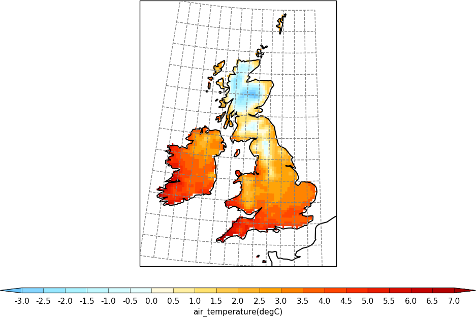
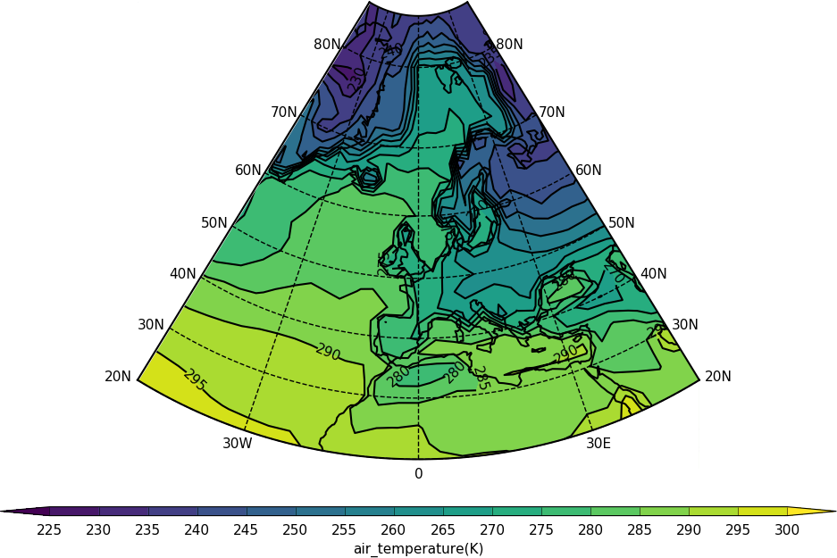

Projections in cf-plot#
The cylindrical and polar stereographic projections are detailed separately in cylindrical plots <cylindrical> and polar plots <polar>.
Example 31 - UKCP projection#

import cf
import cfplot as cfp
f=cf.read('cfplot_data/ukcp_rcm_test.nc')[0]
cfp.mapset(proj='UKCP', resolution='50m')
cfp.levs(-3, 7, 0.5)
cfp.setvars(grid_x_spacing=1, grid_y_spacing=1)
cfp.con(f, lines=False)
cf-plot looks for auxiliary coordinates of longitude and latitude and uses them if found. If they aren't present then cf-plot will generate the grid required using the projection_x_coordinate and projection_y_coordinate variables. For a blockfill plot as below it uses the latter method and the supplied bounds.
Example 32 - UKCP projection with blockfill#
New cfp.setvars options affecting the grid plotting for the UKCP grid are:
grid=True - draw grid
grid_spacing=1 - grid spacing in degrees
grid_colour='black' - grid colour
grid_linestyle='--' - grid line style
grid_thickness=1.0 - grid thickness
Here we change the plotted grid with the grid_colour option to cfp.setvars, xticks and yticks options to cfp.con and make a blockfill plot.
{kind=link}
import cf
import cfplot as cfp
import numpy as np
f=cf.read('cfplot_data/ukcp_rcm_test.nc')[0]
cfp.mapset(proj='UKCP', resolution='50m')
cfp.levs(-3, 7, 0.5)
cfp.setvars(grid_colour='grey')
cfp.con(f, lines=False, blockfill=True, xticks=np.arange(14)-11, yticks=np.arange(13)+49)
Example 33 - OSGB and EuroPP projections#

import cf
import cfplot as cfp
f=cf.read('cfplot_data/ukcp_rcm_test.nc')[0]
cfp.levs(-3, 7, 0.5)
cfp.gopen(columns=2)
cfp.mapset(proj='OSGB', resolution='50m')
cfp.con(f, lines=False, colorbar_label_skip=2)
cfp.gpos(2)
cfp.mapset(proj='EuroPP', resolution='50m')
cfp.con(f, lines=False, colorbar_label_skip=2)
cfp.gclose()
Example 34 - Cropped Lambert conformal projection#
{kind=link}
Lambert conformal projections can now be cropped as in the following code:
import cf
import cfplot as cfp
f=cf.read('cfplot_data/tas_A1.nc')[0]
cfp.mapset(proj='lcc', lonmin=-50, lonmax=50, latmin=20, latmax=85)
cfp.con(f.subspace(time=15))
Example 35 - Mollweide projection#

import cf
import cfplot as cfp
f=cf.read('cfplot_data/tas_A1.nc')[0]
cfp.mapset(proj='moll')
cfp.con(f.subspace(time=15))
Example 36 - Mercator projection#

import cf
import cfplot as cfp
f=cf.read('cfplot_data/tas_A1.nc')[0]
cfp.mapset(proj='merc')
cfp.con(f.subspace(time=15))
Example 37 - Orthographic projection#

import cf
import cfplot as cfp
f=cf.read('cfplot_data/tas_A1.nc')[0]
cfp.mapset(proj='ortho')
cfp.con(f.subspace(time=15))
Example 38 - Robinson projection#

import cf
import cfplot as cfp
f=cf.read('cfplot_data/tas_A1.nc')[0]
cfp.mapset(proj='robin')
cfp.con(f.subspace(time=15))